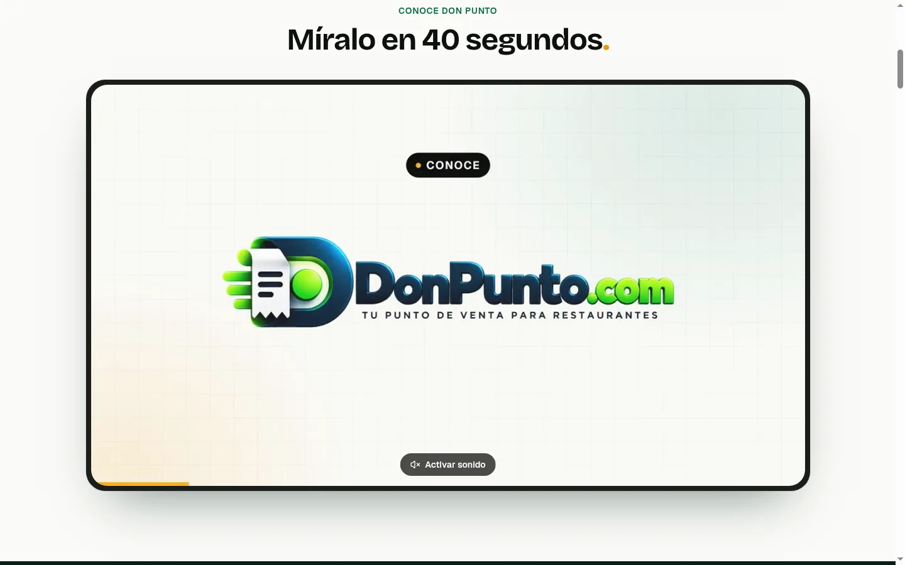
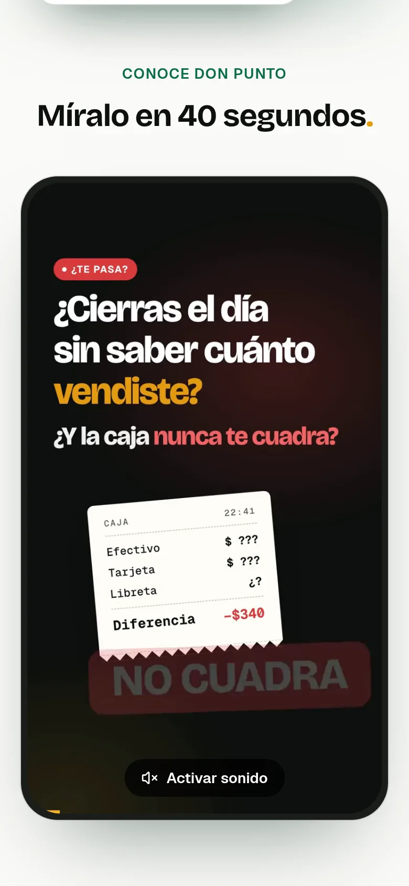

Video de introducción · Don Punto
Borrador para revisión · 40 s · voz Dalia · 2 formatos. En el landing va justo debajo del hero, en autoplay sin sonido con botón «Activar sonido» (horizontal en compu, vertical en celular). Aún NO está publicado en donpunto.com.
Horizontal 16:9
Descargar 16:9 (1080p)Vertical 9:16
Descargar 9:16 (1080p)Así se vería en el landing
Computadora

Celular
